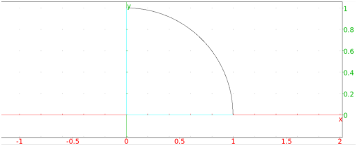
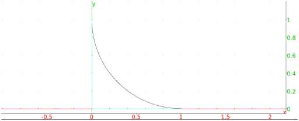

13.11.2 Circular arcs: arc
See also Section 13.11.1
The arc command creates circular arcs.
-
arc takes three mandatory arguments and two optional
arguments:
-
A,B, two points.
- a, a real number between −2π and 2π.
- Optionally, varc, varr, two variable names.
- arc(A,B,a ⟨⟩)
returns and draws the circular arc from A to B that represents
and angle of a. (Note that the
center of the circle will be (A + B)/2 + i*(B −
A)/(2tan(a/2)).)
If the arguments varc,varr are given, they will be assigned
the center and radius of the circle.
Examples
-
Input:
arc(1,i,pi/2)
Output:

- Input:
arc(1,i,-pi/2)
Output:
